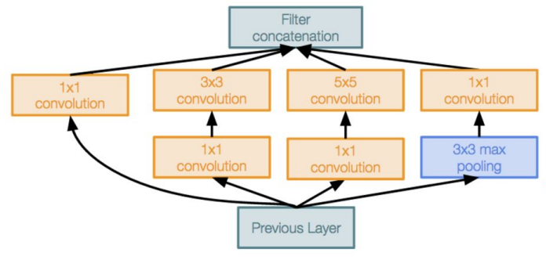

What is AI ?
Definition of Learning :
We need to get a computer do well on a task, without explicitly programming it.
Programming Approach
The main problem of the 'traditional approach' is that a full tolerant system is very difficult to build and (especially) to maintain.
ML Approach
Supervised Learning With the data x is provided also the output y (ground truth) and the goal is to learn a function that maps the input to the output. X can be multi-dimensional, each dimension correspond to an attribute.
Unsupervised Learning
Given the data x_1, x_2, ..., x_n without any label, the goal is to find a structure in the data, for example a clustering.
Reinforcement Learning The agent interacts with the environment, and the goal is to learn a policy that maximizes the reward.A sort of trial and error approach to reach the goal, it is not important the fail but only the final result.
But how to manage a learning problem? A Machine Learner MUST be aple to apply a pseudo-algorithm :
Remember the phrase 'garbage in, garbage out', that underline the importance of the data.
How to deal with data?
Probability <-> ML is all about making predictions
The probability has the ability to summarize the uncertainty
A sample space Ω is the set of all possible outcomes of an experiment (can be finite or not), an event is a subset of the sample space.
The probability of an event A is a function that map the event to a real number in the interval [0,1] , 0<= P(A) <= 1. \
A random variable (R.V.) is a function of the outcome of a randomized experiment(given 2 dice the r.v. X is their sum).
Joint distribution : P(X,Y) if two (or more) r.v. interact to each other.
The probability of an Event E is the sum of the probabilities of all the outcomes in E. $P(E) = \sum P(x_1,x_2,...,x_n)$
Marginal distribution : $P(X) = \sum P(X,Y)$ over Y, that means the elimination of variables.
Conditional Probability : $P(X|Y) = P(X,Y)/P(Y)$ -> fraction of worlds where X is true given Y true. Where P(Y) is the probability of the event Y occurring \
Probabilistic Inference : compute the desired probability from other known probabilities.
The product and the chain rule : $P(x_1,x_2,...,x_n) = P(x_1)P(x_2|x_1)P(x_3|x_1,x_2)...P(x_n|x_1,x_2,...,x_n-1)$ , using only two terms $P(X,Y) = P(X)P(Y|X)$ . From this formula it is possible to derive the Bayes rule :
$P(X|Y) = \frac{P(Y|X)}{P(Y)} * P(X)$
Built one conditional probability from the reverse.
This formula is the most important AI equation, give us the possibility to built one conditional probability from the reverse. Let's reason using the keywords hypotesis and evidence.
$ P(hypothesis| evidence) = P (evidence | hypothesis) * P (hypothesis) / P (evidence) $
For our goal it is possible to ignore the denominator, because it is a normalization factor, P(hypothesis) is the prior probability, P(evidence | hypothesis) is the likelihood and P(hypothesis | evidence) is the posterior probability.
Independence : two events are independent if the occurrence of one does not affect the probability of the other. $P(X,Y) = P(X)P(Y) and P(X|Y) = P(X)$
Naive Bayes assumption : each feature is independent from the others, so the joint probability is the product of the single probabilities. This mechanism is used in the Naive Bayes classifier and decrease significantly the computational complexity, the likelihood function became very easy to calculate and the classification (assign the label) is only a matter of finding the maximum of the posterior probability.
A naive bayes classifier is very simple but can provide good results, it is used in specific domain, if the assumption of independence can be considered valid and if the training data are not too small, with a large number of features.
It is possible to use the Laplace Smoothing to avoid the zero probability problem, that can cause a problem in the classification.
$P(X=v | Y=y) = (count(X=v,Y=y) + k) / (count(Y=y) + k|X|)$ where |X| is the number of values that X can assume and k is the strength of the prior. \
Generative Learning : learn the joint probability P(X,Y). Generative models aim to capture the joint distribution of both input and output, this approach include models like GMM and others. For example, models that predict the next word in a sequence are typically generative models
Discriminative Learning: learn the posterior probability P(Y|X) directly from the data.Concerned with modeling conditional probabilities, specifically the probability of the output given the input, this approach include models like logistic regression, SVM, NN for classification and others. A discriminative model ignores the question of whether a given instance is likely, and just tells you how likely a label is to apply to the instance
Maximum a Posteriori (MAP) seeks to find the parameter values that maximize the posterior probability of the parameter, taking into account both prior knowledge and observed data.When conditional independence is satisfied, Naive Bayes corresponds to MAP classification.
$ MAP=argmax_θ P(θ∣D)$
This is based on the consideration of i.i.d. (independent and identically distributed) hypothesis.
The MAP is maximized by the same hypothesis that maximizes the likelihood function, considering a unfiorm prior, that is used to penalize complexity (more complex hypothesis have lower prior probability).
Maximum Likelihood Estimation (MLE): Suppose we want to estimate an unobserved population parameter based on observations. MLE maximizes the likelihood of our observed data given the parameter. It’s a common method for point estimation
For large amount of data it is possible to appoximate the MAP with the Maximum Likelihood Estimator (MLE).
Continuous Random Variables : if its set of possible values is an entire interval of numbers, the probability of a single point is zero $P(X=x_1)=0$ , the probability of an interval is $$P (x_1<=X<=x_2) = \int_{x_1}^{x_2} f(x) , dx$$
Moments : are a set of quantities useful to describe the distribution od a r.v. or a dataset.
The MLE for a Gaussinan distribution
After some calculations it is possible to find that the MLE for the mean is $ \mu_{MLE} = 1/n * \sum_{i=1}^{n} x_i$ and the variance $ \sigma^{2}{MLE} = 1/n * \sum{i=1}^{n} (x_i - \mu)^2 $
How good is the estimator
An estimator is a rule or a formula that helps us to estimate the value of an unknown parameter in a population using sample data.
There are two main properties for the evaluation of an estimator :
Mean Squared Error : let $\hat{\theta}$ be an estimator for an unknown parameter $\theta$, $MSE(\hat{\theta}) = E[(\hat{\theta} - \theta)^2] $. This is the standard formula but it is also possible to use the variance and the bias to compute the MSE, $MSE(\hat{\theta}) = Var(\hat{\theta}) + Bias(\hat{\theta})^2$ .
Here a table with some distributions and their properties :
3 main questions :
Let's define X the input space and Y the output space,composed by K possible classes/categories, (x,y) is a labeled sample, with x the measurement of the object and y the category the object belongs;
D is the distribution over the space of labeled example, but it is unknown, but represent the population we care about. f() is the function that produce the label, Y = f(X), we can define the LOSS of a classifier as the function that measure the error between the assigned label and the real one (we call it h(x)), $L(h(x),f(x)) = L(h(x),y)$.
The true risk is the probability that the classifier does not predict the correct label on a random drawn point from D, $R_D(h) = P[h(x) != Y]$ in other words it is the expected value of the loss $E_{x-D} {L(h(x), Y)}$
Bayes Risk is the minimum risk that can be achieved, regardless of what classifier is used, it represents the lowest possible prediction error that can be achieved.
$R^* (h*) = min_h R_D(h)$.
It is used to evaluate how well a specific decision rule performs by taking into account both the prior probabilities and the loss associated with different outcomes.
IDD condition : the key assumption of previous and future definitions is that the data are independent and identically distributed.
Empirical risk evaluates the quality of model's prediction $$R_S(h) = 1/n \sum_{i=1}^{n} 1(h(x_i),y_i)$$ However it is impossible to have a perfect classifier, with $R_S(h)=0$ even if the Bayes risk = 0, so we'b be happy if $R_S(h)<= \epsilon $ (accuracy parameters), but again it is difficult to guarantee this condiction for sure, so we can allow a fail probability $\delta \in (0,1)$ (confidence parameter).
The learner should output an hypothesis h such that $ P[R_D(h)<= \epsilon] >= 1 - \delta$ --> PAC (Probably Approximately Correct) learning.
Realizability assumption : for a given class H of function X -> {0,1} there exist $ h* \in H$ such that $R_D(h*) = 0$. This means the family of function holds in the Bayes model.
$m_H$ is the sample complecity of learning H, that refers to the minimum number of training examples or data points required to effectively learn a target concept or function. It helps determine how much data is needed to train a machine learning model that can make accurate predictions or inferences.
The famous rule of taking a number of sample at least 10 times the number of parameters come from the discretization trick, that is used to convert a continuous problem into a discrete one. Each parameters have 32 bits and so $2^{32}$ possible values, so even an Infinite Hypothesis classes Problem is managed as a finite one and with d parameters, $| H_{discrete}| <= 2^{32d}$ and using the logarithm $ln | H_{discrete}| <= 10d$.
Underfitting and Overfitting :
K - fold Cross Validation : the basic idea is to devide the dataset into k subsets, called folds, and use one fold as validation set and the others as training set. This process is repeted k times, so each fold is used as validation set once. The performances of the model are evaluated at each steps and the average is used as final result, to evaluate how well the model is able to generalize. If K is equal to |D|, the process takes the name of Leave One Out Cross Validation, this technique provide the best estimate of the true risk, but it is computationally expensive.
Model Selection : necessary trade-off between complexity and its variance, more powerful models approximate better the bayes function but need more data. The test set MUST NOT be used for hyper/parameters selection.
Linear Regression
In the regression the label space Y is continuous (using the prediction error 0/1 loss doesn't make sense because h(X) give a continuous value), so a possible loss function is the square Loss $L(\hat{y},y) = (\hat{y} -y )^2$, so the Empirical loss on the set S became, using a $h_w(x) = w^{(T)} x + b$: $$L_s(w) = \frac{1}{N} \sum_{i=1}^{N}L(h_w(x_i), y_i)$$

This is a 2-D rappresentation of this concept, but it is applicable to any dimension. So given pairs of input/output values the goal is to find (b,w) that minimize the prediction error, using the squared loss, the error is (y- (b+ w,x))^2
The loss function = $ \sum_{i=1}^{N} (y_i - (b+ <w,x>))^2 = ||y - \begin{bmatrix}1 & X \end{bmatrix} \begin{bmatrix}b\w\ \end{bmatrix}||{2}^{2}$ is a convex function (of w), so it is necessary to find w where gradient is zero. \ To avoid overfitting, that means too complex function, the regularization is used and the objective consist in minimizing both terms. $$RidgeRegression = \frac{1}{2}|| y - X*w||{2}^{2} + \frac{\alpha}{2}||w||_{2}^{2}$$
Logistic Regression for classification : even if it is usually used for real value, it possible to use a sort of 'discretization' to assign a label. Insted of defining a threshold the technique is trying to minimize a loss function over the category directly.
$$ l({x_i,y_i}) = \sum_{i=1}^{N}(y_i - \sigma (ax_i+b))^2$$
with sigma the sigmoid function $\sigma(x) = \frac {1}{ 1 + e^{-x}}$, but the problem of this loss is that it is not convex, so it is not possible to find the global optima.
The loss function can be rewritten as
$$ l({x_i,y_i}) = \sum_{i=1}^{N} -y_i * (log(\sigma (ax_i+b))) - (1-y_i) (log(1 -\sigma (ax_i+b)))$$
This loss function is convex, so there is a global optima.
To find the optimal, apply the gradient over the two variable {a,b}, and set the entire expression to zero (this is a common technique to find the global putting the derivative to zero) after some math passages we find arrive at
$ y_i \nabla_{\theta} ln( \sigma(ax_i + b)) + (1-y_i) \nabla_{\theta} ln(1- \sigma(ax_i + b)) $ taking the first function the process is to derivate a function of a function of a function and so on... as we can see the problem is NOT LINEAR and to find the optimal value it is necessary a lot of computation. A the end the optimal value is a non-linear system and $\nabla l_{\theta} = 0$ is a transcendental equation (equation over the real (or complex) numbers that is not algebraic).
Gradient Descent : this is an first-order minimization algotithm to find a minimum of a function (not necessary the global one), after the algorithm is applied n times (iteratively) until a minimun is reached. $$ x^{(t+1)} = x^{(t)} - \alpha \nabla f(x^{(t)})$$
The gradient of a function is orthogonal to the level curves/surfaces of the function, useful to find the direction to follow. This approach needs the function is differentiable (the gradient of the function is continuous), if the gradient of the fuction is zero, the function is stuck in a stationary point, but it is not necessary a local optimal, stationary point ⇏ local optimal.
$\alpha$ is called Learning Rate, an it is an hyperparameters that influence the step size, so the speed of convergence and the risk of overshooting. The step size is not given only by $\alpha$ but by $\alpha ||\nabla f||$ , with $\alpha$ > 0. Usually the value of the learning rate is 0.0001<=x<=0.1 , smaller values are used for more complex problems and larger dataset (e.g. 0.001 or lower) meanwhile larger values are suitable for simple problems (e.g. 0.1)
The goal is to find a $\alpha$ that allow to get the lowest point of the funtion where the gradient is tangent to the isocurve, but there is another hyperparameters that influence the convergence, the initialization point.
$\alpha$ can be a constant value (not so effective) or adaptive, changing the value according to another parameter $\rho$
decay parameter : $\alpha^{(t+1)} = \frac{\alpha^{(t)}}{1+ \rho*t} $ .... many different implementations are possible.
A Momentum is a technique helps to improve the convergence speed and to escape from the local minima, the idea is to accumale 'gradient' at each step (like an accellerator)
momentum → $v^{(t+1)}= \lambda v^{(t)} + \alpha \nabla f(x^{(t)})$ and $ x^{(t+1)} = x^{(t)} +v^{(t+1)}$. Usually the value of the momentum is from 0.0 to 1.0, the higher the value the more the gradient is accumulated, with 1.0 the update is only based on the past gradients and with 0.0 the update is only based on the current gradient.
The main idea is to maintain a moving average of the past gradients and use it to adjust the current gradient update, the effect is to smooth the updated trajectory and reduce the oscillations.
Usually we are not interested in the global optimum, because it can cause overfitting (on the training data), but the goal is to be able to generalize well; this approach can be used both for convex and non-convex problems. Instead in DL usually we can have non-convex and non-differentiable problems, so the gradient descendent can't be used.
To compute the loss it is necessary to compute the gradient for each sample in the summation term, indeed two bottlenecks that make GD not always applicable are, the number of parameters and the number of samples.
Stochastic Gradient Descent
The idea is to take a mini-batch $\beta \in \Tau$ that is the whole dataset,with m << n examples and calculate the derviatives over this subset. The mini-batch must have rappresentative/meaningful data to approximate well the gradient. $$ \frac{1}{m}\sum^{m}{i=1}\nabla \hat{l}(\beta) ≈ \frac{1}{n}\sum^{n}{i=1}\nabla \hat{l}(\Tau)$$
Note that the update cost does not depend on the dataset size, but on the dimensionality of the sample.
When step (2)-(4) cover the entire dataset, we call it Epoch.
SDG need to shuffle the dataset to take mini-batches avoiding bias.
To speed up the process it is possible to process the mini-batches in parallel (hw limitations).
Small mini-batches can offer a regularizing effect , very small batches has a high variance in the estimate of the gradient --> use a small learning rate to maintain stability.
SDG can find low value of the loss even if it is not a minimum.
SDG vs GD :
Excursus on perceptron
The idea came from the human neuron, the basic unit of the brain. A perceptron is a single unit (single component of a neural network) that take as input the values of the features, multiply them by the weights (each feature has an own weight) and sum them up(that is the activation function), at the end it is also possible to apply another function (e.g. step function).
Used as linear classifier, the weights are inizialized to zero, a classification is performed and the weights are updated according to the result (error or correctly classified) $w_i = w_i + y^* x $. If the prediction is wrong $y^* x$ is negative otherwise positive.
This is the best algorithm but only if the data are LINEARLY SEPARABLE, otherwise the alg will loop forever or it is possible to set a maximum number of iterations or a threshold to stop the process even for non-separable dataset, but this can lead to bad separating solutions.
Idea !! only one perceptron can't solve problems where data are not linearly separable, but this problem can be solved using multiple perceptrons.
Neural Network
Advanced models -> we are interesting in non-linear function because many interesting phenomena are non-linear, trying to create a model with a good universality, that means the model is able to approximate any function, fixing the general form of the parametric model and optimizing the parameters, with a bonus objective that is use a model that is not too complex to use.
Using a multi-layer perceptron approach the general schema is : $$ output ⬅ (\sigma \quad o\quad f_{\Theta_{n}})o(\sigma \quad o \quad f_{\Theta_{n-1}})o..o(\sigma \quad o \quad f_{\Theta_{1}})(x)⬅ input $$ Each $f$ function has its own parameters/weights $\Theta$ that come from the previous layer. We can call hidden layer the rappresentation after the linear function and before the activation function, $ x_{l+1} = \sigma (W_{l}x_{l} + b_l )$ where each row of the matrix W is called Neuron.
The last layer or output layer determines the co-domain of the network, for example using a sigmoid the network will be map to $R^p → (0,1)^q$ but for generality, usually it is used a linear layer as output to map the result as $R^p → R^q$
Universality Approximation Theorem: this theorem demonstrate that a neural network with a single hidden layer, with a sufficient number of neurons, can approximate any continuous function with an arbitrary accuracy, working on a compact subset of the input space. But it doesn't say how to compute the weights to reach the accuracy, or how many neurons, but empirical results show that with a sufficient #neurons + gradient descent we can have good results.
Solving the weights $\Theta$ is called "Training". Let's use the MSE (mean squared error) as loss function $ \nabla(l_\Theta) = \frac{1}{N} \sum_{i=1}^{N} \nabla_{\Theta}||y_i - g_{\theta}(x_i) ||^{2}{2} $ with $g{\theta}(x_i) = (\sigma (f_{\theta_n} (\sigma (f_{\theta_n}....(x)))))$, computing the gradient is the bottle neck of this approach so we need an automatization of this computational step.
Computational Graph :
A possible approach is creating the computational graph, that represent a mathematical expression as an acyclic graph, where nodes are the operations and the edges are the data dependencies. The evaluation of $f(x)$ correspond to a forward traversal of the graph.
Here some possible examples, the last one is a graph with more than one dimension:

Automatic Differentiation
the basic idea is to systematically compute the derivatives of a function by breaking it down into elementary operations and evaluating their derivatives at a particular point; in this way the cost of computing the derivative is equal to compute the function itself.
Using the 'Forward Mode' the computational graph is traversed from the input to the output, in this way the cost of computing the derivative is equal to compute the function itself, but instead if the input is high dimensional, the cost of the gradient = #dimension * cost of computing the function. The partial derivate are computed ,using the chain rule, respect to the input (using x as input we calculate $ \frac{d}{dx}y,\frac{d}{dx}z... $). This approach is very efficient if the function has a single input and many outputs.
Using the 'Reverse Mode' the computational graph is traversed from the output to the input,it is very efficient if the function has many input and a single output, the first derivate is the output respect to the output and so on.
Both methods provide the same results, but the area of application is different.
The first example is the application of the forward mode, the second one is the application of the reverse mode.
We can call back-propagation, the reverse mode AD applied to a neural network, evaluate $\nabla l$ with backprop is faster than evaluate $l$.
Important : backprop (but also the forward mode) is not just the chain rule, there are intermediate variables.
Neural Networks (Deep feed-forward)

A neural network is a complex structure composed by multiple layers, each layer is a function that try to rappresent the reality, usually a layer is a non-linear function of a linear function and the parameters of a layer are the weights (including the bias terms). Each node is connected to all the nodes of the previous layer, and the output of a node is (a part of) the input of all the nodes of the next layer
This type of structure is called Feed Forward Neural Network, it is universal but it has some problems, as the fact it can be arbitrarily complex, difficult to optimize and the number of parameters can be too high to be handled, additionally it is very difficult to achieve generalization.
There are problems, to partially solve them we can use a prior knowledge task-indipendent, this must be derived from the data.
Another important characteristic is the traslation invariance, the output of the model must not change if the input is translated, using the example of an image, an element remain the same even if it is moved in the image.
Convolutional Neural Networks (CNN)
In this structure the output of a node depend only on specific input (and not all the output of the previous layer), indeed the layers are not fully connected anymore. This architecture is useful to reduce the number of parameters and the computational cost, trying to capture the patterns in the data (hierarchical, local, traslation invariance....).
Teoretical explanation : Convolution
The convolution is a math operation that combine 2 functions to produce a third one. Given two functions G and F : $ [-\pi , \pi]$ the convolution function is :
$$ (f \star g) (x) =\int_{-\pi}^{\pi} f(t) g(x-t) $$
This operation is commutative and shift equivariant (is not the opposite of invariant), that means $ G(T f) = T (G f) $.
$(f \star g) (x)$ is the feature map, provide a hierarchical representation of the input data, low-level feature maps capture simple patterns instead high-level fm capture more complex structures.
$g(x-t) $ is the kernel (or Convolutional Filter), it is a smaller size grid of weights used to perform the convolutional op with the input data.
Usually we care about the discrete convolution, the only difference is the integral is replaced by a sum. This approach is useful especially for the images, where the input is a matrix of pixels.
The main idea is to compose equivariant layers implemented via convolutio, in this new structure the number of connection is decreased and has been added a new operation, the pooling, a sort of downsampling that reduce the amount of parameters.
Here an example of polling applied to an image, with this 3x3 filter the output is a 3x3 matrix. In this example this allow to capture non-local interaction. This layer has no learning params but only hyperparams, like the size of the filter, the stride, the padding and the number of filters; it makes the representation smaller and more manageable and it operates over each activation map indipendently.
From now we'll consider example with images as input.
Fully connected layer : taking as input an image 32x32x3, is transformed into a 1x3072 vector, this approach doesn't take into account the spatial structure of the image.
Convolutional layer : taking as input an image 32x32x3, applying a 5x5x3 filter/kernel (important that the depth is the same), the feature map is a 28x28x1 image, applying more than one filter is possible to obtain more than one activation map, stacking up the N future maps obtain an 'image' 28x28xN, where N is the number of filters.
How to calculate the dimension of the output? The output size is = (N - F + 2*P /stride) + 1, with N dimension of the input, F dimension of the filter, P the padding size and stride the step size, for example a matrix 7x7 with a filter 3x3 and stride 1, the output is 5x5. Note that the dimension of the outut MUST be an integer so not all the stride are possible.
Summary
Input a volume of size W1xH1xD1
4 hyperparameters required: K (number of filters), F (spatial extent), S (stride), P (zero-padding)
Produces a volume of size W2xH2xD2 where:
With parameter sharing, it introduces F x F x D1 weights per filter, for a total of (F * F * D1)*K weights and K biases. For example if the input volume has size 32x32x3 and the 10 filters have size 5x5, with stride 1 and 2 padding the number of parameters 5x5x3 +1 = 76, so the total number of parameters is 76x10 = 760.
The total number of multiply-adds is equal to the number of output values (W2xH2xD2) multiplicated by the number of weights in each filter (FFD1). E.g. if the input volume has size 32x32x3, the output volume has size 32x32x10, and the filter size is 5x5x3, then the number of multiply-adds is 32x32x10 = 10240 and the numeber of weights per filter is 5x5x3 = 75, so the total number of multiply-adds is 10240x75 = 768k.
The Batch Normalization is a technique that normalize the output of a layer, to have zero mean and unit variance, it reduce the 'internal covariate shift' (the change in the distribution of internal activations due to the change in network parameters during training), improve optimization and other benefits.
Some possible benefits:
Usually inserted after a fully connected or convolutional layer and before the activation function.
Problems :
It squashes to range [0,1], but it has 4 problems :
- The saturation 'kill' the gradient (it goes to 0 and the parameters will not updated)
- Output is not zero-centered (we would a range [-1,+1])
- The input to a neuron is always positive, so che gradient is always all positive or all negative.
- The exponential is a bit computational expensive.
Better than the sigmoid because the range is [1,-1],
the zero centered output is better, but remain the same problem of
the gradent that is bring to zero in the saturation zone
One of the best and most used non linear function on the NN, it is good because does not saurate (in the positive region), it converge much faster than others.
The main problems are the function is not zero centered and that on the negative side,
the gradient will go to zero (NO UPDATE)
This version of the relu has the main characteristic that it will not die (even in the negative side).
Usually = max(0.01 * x, x) but it is also possible to specificy a parameter alpha that is adaptive (instead of 0.01)
It has the same benefits of the Relu, but adds a closer zero-mean outputs and robustness to the noise (even respect to the leaky version),
but the main problem is the computation of exp.
Conclusion
use the simple ReLu, the other versions increase the accuracy but not so much, but the main thing is not to use the sigmoid or tanh.
Data PreProcessing : Usually can be useful to preprocess the data, there are many techniques, it is possible to center the data (subtract the mean) or normalize the data (divide by the standard deviation), this process can lead to a better convergence and to a better generalization.
It is also possible to use the PCA to reduce the dimensionality of the data, or Whitening of the data, that is a transformation that makes the data less correlated, so the features are more indipendent. Whitening is often used in image preprocessing, where it helps in removing redundancy by making adjacent pixels less correlated.
Vanishing Gradient:
Exploding Gradient:
Weight Initialization
If the weights are initialized to zero, all output are 0 and the gradients are the same, so there is no 'symmetry breaking' and the network will not learn.
Proper initialization can help prevent issues like vanishing or exploding gradients, and it can contribute to faster and more stable convergence during training.It's often a good practice to experiment with different initialization techniques and choose the one that works best for a specific architecture and problem.
Let's see some possible techniques :
Regularization
The regularization is a technique used to reduce the risk of overfitting, that occurs when the model perform very well on the training data but fails to generalize well on the test data. The idea is to add a penalty term to the loss function, to avoid the model fit the noise in the training data.
Data Augmentation : this technique is used to increase the size of the training set, applying some transformation to the existing data, with the aim to increase the generalization. It is important to apply the transformation that are meaningful for the problem, for example for the images it is possible to apply rotation, translation, scaling, cropping, flipping, adding noise, changing the color, changing the contrast, changing the brightness... and so on, but without modifying the main characteristics of the image.
Model Ensembles : combine multiple models to obtain a better result, the idea is to train different models with different initialization weights, hyperparameters... At test time, the output of the models are averaged to obtain the final result, this approach can improve the generalization and the robustness of the model (usually 2% of improvement). A possible trick to avoid training multiple models is use different snapshots of the same model, that means to save the model at different training time.
Training a NN recap :
The learning rate definition is not trivial, how can we choose between a small or an high value? The commmon approach is to apply a 'learning rate decay', so the main operation became the defition of the decay faunction.
There are different approaches :
How long to train ? To understand when it is necessary to stop the training, it is possible to keep track of the model snapshot that worked best on the validation set, an early stop can be useful to avoid overfitting on the training set that means poor generalization.
Hyper parameters optimization :
Or follow a more advanced approach composed by many steps:
Transfer Learning
The common idea that to train a model it is necessary a lot of data, it is busted nowdays, using this technique it is possible to use a pre-trained model and adapt it to a new task.
If we decide to modify only the last layer of the NN, the process take the name of Transfer learning, whereas if many layers are involve in the change, it is called Fine Tuning.
The intermediate layer are taken 'frozen', that means apply a learning rate = 0 to keep the hyperparameters prevoiusly calcutated without update anything.
This approach is useful in many case and is the most common starting point to create new solution to different tasks, the norm and not an exception.
On similar task and dataset, if we have only little data, the best approach is to use a linear classifier on the top layer, instead if we have a lot of data (100-1000 sample per class), it can be convenient finetune a few layer to adapt the NN in a better way.
In the case of similiar task but very different dataset, if we have little data, can be a problem (advice, try to collect more data) using a linear classifier do not guarantee good result, instead if we have a lot of data, the best solution is to finetune many layer, to adapt the NN to a 'different problem'.
Studies has shown that pre-training + fine tuning can be better than training from scratch, especially if the dataset is small, another advantage is that the training time is very low respect to the training from scratch. Training from scratch works very well if we have enough data and it is essential if the model has been trained for another task (i need an anomaly detection model but i've an image recognition model)
AlexNet
It is composed by 5 convolutional layers (after the first, the second and the fifth there is a pooling layer) and 3 fully-connected layer (at the end of the network) on the slide, the complete analysis with the architecture and the results.
Formula to calculate the output size of a convolutional layer : (D - k + 2P / S) + 1 , with D dimension of the input, k dimension of the filter, P the padding size and S the stride. The same formula is used for the pooling layer, instead the third is equal to the number of filters.
We must consider that the number of parameters is equal to zero in the pooling layer, because there are no weights.
The general trend shows the memory occupation decrease during the training (most of the memory usage is in the early convolutional layers), as the multiplication-adds, whereas the number of parameters increase (almost all parameters are in the fully-connected layers).
VGG Net
This network is somehow an improvement of AlexNet (VGG16 and VGG19), all conv are 3x3 with stride 1 and pad 1, the max pool are 2x2 with stride 2 and after the pool the #channels are doubled.
Using 2 3x3 conv instead of 1 5x5 conv, provide the same receptive field but with less parameters and less FLOPs. The performance of the VGG is better than the AlexNet, but pay attention to the fact that VGG is much bigger than AlexNet. Memory occupation is 25x higher than AlexNet, the number of parameters is 2.3x higher and the number of operations is 19.4x higher.
GoogleNet
The goal of this project was to create deeper Network with computational efficiency. The most important idea is the introduction of the 'Inception Module', the reduction of the number of parameters (only 5 milions, 12x less AlexNet) and the removal of the FC layers.
The inception module is a module that use different filter size (1x1, 3x3, 5x5) and pooling, the output of the module is the concatenation of the output of the different filters, the 1x1 convolution are important to reduce the number of channels before the expensive convolution.

At the end of the network the FC layers are replaced by a global average pooling to collapse the spatial dimensions and one linear layer to produce the scores, this is useful to reduce the number of parameters because the FC layers are the most expensive in terms of number of parameters.
The googleNet was proposed before the batch normalization, so the authors used a 'auxiliary classifier'(intermediate classifier to calculate the loss and help the gradient to flow) to help the training, but nowdays is not necessary anymore.
ResNet
With batch normalization it is possible to train deeper networks, but what happens if the network is too deep? The first guess is that the high loss on validation set is due to overfitting, but it is not true, the reality was the model seems to underfit (even at training time the loss was high).
A deeper model can emulate a shallower model, setting extra layers to the identity function, but the problem is that don't learn identity functions to emulate the shallower model.
Solution -> Residual Block
Important concepts :
Residual block : this new block is composed by 2 conv layers, both with 3x3 filter, but the main innovation is the introduction of the 'skip connection' that the model can choose to take or not (the skip connection is the identity function). The output of the block is the sum of the output of the 2 conv layers and the input of the block, so the only constraint is that the dimension of the input and the output must be the same. Thanks to the shortcut the gradient can flow directly to the previous layers avoiding the vanishing gradient problem.
BottleNeck layer : this layer use a 1x1 filter, it is useful to reduce the number of channels, help to reduce the number of parameters, memory occupation and computational cost. It is used a 1x1 kernel because is less computational expensive than a 3x3 or 5x5 kernel (faster computation) and same result (apply non-linearity), element-wise multiplication/summation allow to learn complex pattern.
Expansion layer : this layer use a 1x1 filter and his goal is to increase the number of channels, it is used to capture and compute more complex patterns, increasing the network capacity.

The resnet has different versions, the difference is the depth of the network (e.g. resnet50, resnet18...), but the common characteristic is the division of the network in Stages, each stage is composed by a number of residual blocks.
This new architecture is more efficient, provide good results (top-1 accuracy : from around 65% for resnet18 to around 75% for resnet152) with a low number of operations (similar to AlexNet) and a low number of parameters.
Other CV tasks :
Difference between Multi-task Learning and Transfer Learning :
Usually to classify a single object is analyzed the whole image, so we'll consider different approaches to perform a multi-object classification/detection, for this second task we need a number of output equal to the number of object detected.
Sliding window : the idea is to slide a window on the image and classify the content of the window, but this approach is not manageable because it is necessary to slide the window on the entire image, so the computational cost is very high because the CNN computation is done for each image crop.E.g. Let's use an image of size H x W, a window of size h x w, possible x position are W-w +1 and possible y position are H-h +1, so the total number of windows is (W-w +1) x (H-h +1) and the total number of possible boxes is = H(H+1)/2 x W(W+1)/2, taking an image 800x600 (higher risolution for object detection) would means around 58M boxes to evaluate.
Region proposal : the idea is to use an algorithm (Selective Search) that find the 'region of interest' in an image (more than thousand regions in few seconds on CPU).
How compare bounding boxes(for the regression task) :

How to crop features (for the fast R-CNN) : In the fast R-CNN we don't have the image anymore, but the crop is done on the feature maps, so it is necessary to identify methods to estimate to crop this features map in a proper way as done for the 'traditional images'.
Faster R-CNN
In the 'Fast R-CNN' the main runtime is taken by the heuristic 'selective search', so the idea was to introduce a NN to predict the proposal area, so it has been introduced the Region Proposal Network
The idea of the 'region proposal network' is to identify anchor box of fixed size at each point in the feature map, at each point predict whether the corresponding anchor contains an object (a score with the conv) and for the positive boxes, predict a box transformation to regress from a anchor box to object box (bounding box). At the end of this process is calculated the classification loss and the bounding-box regression loss.
To avoid problem related to the shape of the anchor box, the solution is to use k different shape anchor box for each point in the feature map.
This architecture is composed by two stage, the first arrive until the end of the region proposal network and the second one is the last part of the network where there is the classification and the object selection.
But the second stage is necessary?
Single stage Object detection : create the anchor and classify each one as object/not object, than classify each object anchor as one of C categories (or background), with this approach the RPN does all the work without the need of the second stage.
Conclusion : Faster R-CNN has the best accuracy but it is slow, the single-stage version is much faster but has worse results.
The goal is to classify each pixel in the image, don't care about the object, indeed if there are 2 object of the same time near each others, are not identified as different objects (the idea is that the SS merges instances).
Approaches :
Sliding window : the idea is to slide a window on the image and classify the content of the window, but this approach is not manageable because it is necessary to slide the window on the entire image, so the computational cost is very high. Worst approach.
Fully Convolutional: use a CNN to classify each pixel, the convolutional can change the number of channels, but the width and the height are the same; after some convolutional layers is applied an argmax to obtain the class of each pixel. There are problems with the resolution, indeed the convolution of high resolution images is very expensive.
Possible solution downsampling and upsampling the image. The downsampling is done using the pooling, strided convolution... but the upsampling ?
Upsampling :
 |
Softmax : is often used as the last activation function of a neural network to normalize the output of a network to a probability distribution over predicted output classes. The function takes as input a vector z of K real numbers, and normalizes it into a probability distribution consisting of K probabilities proportional to the exponentials of the input numbers, indeed map the interval of values to the interval [0,1] (exponential)
Cross Entropy loss: is a loss function used to calculate the loss between probabilities, $H(P,Q) = - \sum_{i=1}^{N} P(i) log(Q(i))$, where P is the true probability of the class/event and Q is the predicted probability of the class/event. The cross-entropy loss is a measure of how different your predicted distribution is from the true distribution of the data.
Top-N error : is a metric used to evaluate the performance of a classification model, it is the percentage of the time that the true class is not in the top N predicted classes. For example, if the top-5 error is 0.15, that means that 15% of the time the true class is not in the top 5 predicted classes (the top-5 most probable classes do not include the true class)